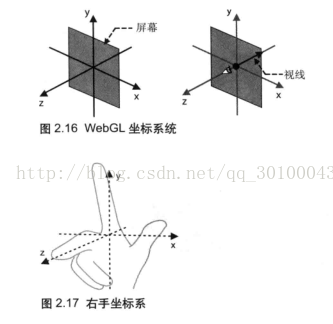
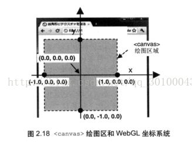
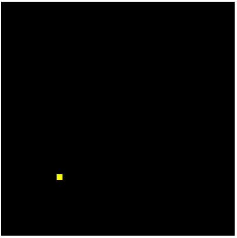

对应《WebGL编程指南》代码：02-HelloPoint1
要点：着色器、着色器代码规范、vec4（齐次坐标）、gl.drawArrays()
步骤
- 获取
<canvas>元素
- 获取WebGL上下文
- 初始化着色器
- 设置
<canvas>背景色
- 清除
<canvas>
- 绘图
知识点
-
着色器
顶点着色器：用来描述顶点特性（位置、颜色等）的程序。顶点是指二维或三维空间中的一个点（端点或交点）。
片元着色器：进行逐片元处理过程如’光照‘的程序。片元是一个WebGL术语，可理解为像素（图像的单元）。
-
代码规范
因为着色器程序代码必须预先处理成单个字符串形式，所以用+将多行字符串连成长字符串，当着色器内部出错时，可以获取出错行号，也可以不使用\n
1
2
3
4
5
6
7
8
9
10
11
12
|
var VSHADER_SOURCE =
'void main() {\n' +
'gl_Position = vec4(0.1, 0.1, 0.0, 1.0);\n' +
'gl_PointSize = 10.0;\n' +
'}\n';
var FSHADER_SOURCE=
'void main(){\n'+
'gl_FragColor = vec4(1.0, 1.0, 0.0, 1.0);\n'+
'}\n';
|
-
initShaders(gl, vshader, fshader)初始化着色器，
返回值：true/false
作用：将字符串形式的着色器代码从js传给webgl系统，并建立着色器。
运行位置：着色器运行在WebGL系统，而不是js程序中。
-
WebGL程序 = 运行在浏览器中的js + 运行在WebGL系统的着色器程序
-
vec4：表示三个浮点数组成的矢量（vector）
-
vec4(v0, v1, v2, v3)
作用：创建vec4类型的变量
返回值：由v0~v3组成的vec4对象
参数：X、Y、Z坐标 + 1.0
-
齐次坐标：由4个分离组成的矢量被称为其次坐标。
齐次坐标用如下符号描述：(x,y,z,w)，等价于(x/w, y/w, z/w)。所以当w等于1，就可以当成三维坐标使用。w值必须大于0，若w趋近于0， 那么它表示的点趋近于无穷远。
作用：用矩阵乘法来描述顶点变化称为可能。
-
gl.drawArrays()
1
2
3
4
5
6
7
| 作用：执行顶点着色器，按照mode参数指定的方式绘制图形
参数：
mode，指定绘制的方式（gl.POINTS/gl.LINES/gl.LINE_STRIP/gl.LINE_LOOP/gl.TRIANGLES/gl.TRIANGLE_STRIP/gl.TRIANGLE_FAN）。
first, 指定从那个顶点开始绘制（整数型），0表示从第一个顶点开始画起。
count, 指定绘制需要多少个顶点（整数型），顶点着色器执行的次数，每次处理一个顶点。执行完后，片元着色器开始执行
返回值：无
错误：/
|
-
WebGL坐标系统：右手坐标系（暂时这么认为）


- WebGL不需要交换颜色缓冲区
实例
1
2
3
4
5
6
7
8
9
10
11
12
13
14
15
16
17
| <!DOCTYPE html>
<html lang="en">
<head>
<meta charset="UTF-8">
<title>Draw a point</title>
</head>
<body onload="main()">
<canvas id="webgl" width="400" height="400">
Please use the browser supporting "canvas".
</canvas>
<script src="../lib/webgl-utils.js"></script>
<script src="../lib/webgl-debug.js"></script>
<script src="../lib/cuon-utils.js"></script>
<script src="HelloPoint1.js"></script>
</body>
</html>
|
1
2
3
4
5
6
7
8
9
10
11
12
13
14
15
16
17
18
19
20
21
22
23
24
25
26
27
28
29
30
31
32
33
34
35
36
|
var VSHADER_SOURCE =
'void main() {\n' +
'gl_Position = vec4(-0.5, -0.5, 0.0, 1.0);\n' +
'gl_PointSize = 10.0;\n' +
'}\n';
var FSHADER_SOURCE=
'void main(){\n'+
'gl_FragColor = vec4(1.0, 1.0, 0.0, 1.0);\n'+
'}\n';
function main() {
var canvas = document.getElementById('webgl');
var gl = getWebGLContext(canvas);
if( !gl )
{
console.log('Failed to get the rendering context for WebGL');
return ;
}
if(!initShaders(gl, VSHADER_SOURCE, FSHADER_SOURCE)){
console.log('Failed to initialize shaders.');
return ;
}
gl.clearColor(0.0, 0.0, 0.0, 1.0);
gl.clear(gl.COLOR_BUFFER_BIT);
gl.drawArrays(gl.POINTS, 0, 1);
}
|
效果

Tips:
Please indicate the source and original author when reprinting or quoting this article.